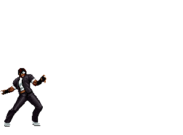

kusanagi
Origem
Kusanagi foi introduzido pela primeira vez em The King of Fighters 2002 como um personagem secreto. Ele foi considerado por muitos fãs, um clone de Kyo criado como um experimento do NESTS
Estreia canonicamente acontece em The King of Fighters 2003 . Durante o torneio de 2003, Kusanagi foi criado como produto da magia de Chizuru Kagura enquanto sob o controle de Mukai (o líder da operação KOF 2003) e Botan (A marionetista a controlar Chizuru). Sua aparência maligna possivelmente se deve ao fato de ter sido criado por Chizuru enquanto estava sob o controle de Mukai (o líder da operação KOF 2003 ) e Botan (o titereiro que controla Chizuru e Rose Bernstein ). Durante o torneio, Kusanagi ataca o K' Team ( K' , Maxima e Whip ) no Oriente Médio, mas é finalmente derrotado. Atualmente não se sabe onde Kusanagi está após os acontecimentos de 2003 .
Kusanagi às vezes é chamado de Clone Kyo .
